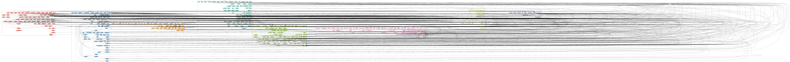

The Natural L4 codebase
AST / CST
The Natural L4 parser
The first-generation parser was based on BNFC: see
This work was done around 2020, 2021. It parsed text-file input.
The second-generation parser for the spreadsheet syntax was based on Megaparsec: see
https://github.com/smucclaw/dsl/blob/main/lib/haskell/natural4/src/LS/
The monadic parser is slow. Profiling it with a flame graph shows that a great deal of time is spent backtracking. The parser does a bunch of lookahead and other work to deal with indentation. BNFC has native support for "layout rule" logic. In this parser, we hacked up an emulation of indentation-as-parenthesis, which doesn't work very well. There is also a homegrown tracing engine that spits out megabytes of logging info to help figure out what the parser is thinking.
Many test
cases
later, we still don't have full confidence in the parsing. For
example, trying to set up a BoolStructR that has a non-null PrePost
label can sometimes fail unintuitively when there is too much space or
not enough space between the label and the children.
The parser also hoists inline rules into top-level rules. This is the purpose of operating the parser within a Writer monad. See tellIDFirst.
Meng's Analyzer / 'Interpreter'
After the input CSV is parsed into a collection of Rule types,
Interpreter.hs
attempts to analyze and reorganize it, to make it more ready for the
various transpilers to export from.
This is where rule substitution happens and simple rule rewriting/optimization.
This module is not really an interpreter. It should have been called an Analyzer.
graph TB;
A1["Google Sheets tab\n(via API)"] -- "L4/Refresh" --> C;
A2["command-line invocation\n(perhaps involving fswatch)"] -- calls --> C;
subgraph C ["natural4-exe (app/Main.hs)"]
classDef nl4exe fill:#f9f,stroke:#333,stroke-width:2px;
P["src/LS/\nParser.hs"] --> I["src/LS/\nInterpreter.hs"];
class P,I nl4exe
end
C --"runs"--> D["various transpilers under src/LS/XPile/"];
D --"output to"-->E[("workdir/uuid/\nvarious LATEST files")];Module dependency graph
produced by
(base) ┌─[20240522-14:35:55] [mengwong@rosegold:~/natural4/src/LS]
└─[0] <git:(main a0ecd7ff) > grep 'import LS' *.hs | grep -v -- '-- import' | perl -ple 's/ \(.*//g; s/\.hs:import LS\.(.+)/ --> $1;/'
graph TD;
classDef default fill:#f9f,stroke:#333;
Parser --> Interpreter;
BasicTypes --> TokenTable;
DataFlow --> Rule;
DataFlow --> Types;
DataFlow --> XPile.Logging;
Error --> BasicTypes;
Error --> Utils;
PrettyPrinter --> Rule;
PrettyPrinter --> Types;
TokenTable --> Utils;
Types --> BasicTypes;
Types --> Utils;
Verdict --> Rule;
Lib --> Error;
Lib --> Parser;
Lib --> RelationalPredicates;
Lib --> Rule;
Lib --> Tokens;
Lib --> Types;
Lib --> Utils;
RelationalPredicates --> Parser;
RelationalPredicates --> Rule;
RelationalPredicates --> Tokens;
RelationalPredicates --> Types;
RelationalPredicates --> Utils;
Tokens --> Error;
Tokens --> Rule;
Tokens --> Types;
Rule --> Types;
Rule --> XPile.Logging;
Parser --> Rule;
Parser --> Tokens;
Parser --> Types;
Interpreter --> PrettyPrinter;
Interpreter --> RelationalPredicates;
Interpreter --> Rule;
Interpreter --> Types;
Interpreter --> Utils;
Interpreter --> XPile.Logging;Detailed function call graph
To produce this, run function-call-graph
(base) ┌─[20240522-14:28:22] [mengwong@rosegold:~/natural4/src/LS]
└─[0] <git:(main a0ecd7ff) > fcall --clusters Lib.hs Parser.hs Utils.hs Interpreter.hs RelationalPredicates.hs Rule.hs Tokens.hs Types.hs > LS.dot
(base) ┌─[20240522-14:29:42] [mengwong@rosegold:~/natural4/src/LS]
└─[0] <git:(main a0ecd7ff) > dot -Tsvg LS.dot > LS.svg

Transpilers
Moving past the parser and analyzer stages, we come to the transpilers.
graph TB;
A1["Google Sheets tab\n(via API)"] -- "L4/Refresh" --> C;
A2["command-line invocation\n(perhaps involving fswatch)"] -- calls --> C;
subgraph C ["natural4-exe (app/Main.hs)"]
classDef nl4exe fill:#f9f,stroke:#333,stroke-width:2px;
Parser --> Interpreter;
class Parser,Interpreter nl4exe
end
C --"runs"--> C1["the Purescript and Vue codebase\n(2021/2022)"];
C1--"imports"-->D[["LS/XPile/Purescript.hs"]];
D--"transpiles to"-->E[("workdir/uuid/\npurs/LATEST.purs")];
C --"runs"--> G0["the JSON Schema transpiler\n(2023)"];
G0--"imports"-->G1[["LS/XPile/ExportTypes.hs"]];
G1--"transpiles to"-->G2[("workdir/uuid/\njsonTp/LATEST.json")];
C --"runs"--> H0["the Prolog transpiler"];
H0--"imports"-->H1[["LS/XPile/Prolog.hs"]];
H1--"transpiles to"-->H2[("workdir/uuid/\njsonTp/LATEST.json")];
C --"runs"--> I0["other transpiler"];
I0--"imports"-->I1[["LS/XPile/OtherTranspiler.hs"]];
I1--"transpiles to"-->I2[("workdir/uuid/\nTranspilerDir/LATEST")];Main.hs runs a whole zoo of transpilers:
- https://github.com/smucclaw/dsl/blob/main/lib/haskell/natural4/app/Main.hs#L185-L224
- https://github.com/smucclaw/dsl/tree/main/lib/haskell/natural4/src/LS/XPile
We have already talked about some of these, above -- MathLang and Petri.
TODO: Catalogue as many of the things as possible in https://github.com/smucclaw/dsl/tree/main/lib/haskell/natural4/src/LS/XPile and note their statuses and contexts, since that's what WT had asked for.
Intro-x.hs
The files:
IntroBase.hs, IntroBasic.hs, IntroLog.hs, IntroReader.hs, IntroShoehorn.hs, IntroTrivial.hs
- Status: Tutorial, ready to be deprecated
- Context: These were written by Meng; they were intended to introduce the notion of transpilation and the patterns of implementation in this project. One pattern was about outputting to files on disk in various
Showable or printable ways analogous toSTDOUTandSTDERR. Anotehr pattern has to do with logging. Not all the actual transpilers follow the structure outlined in these files, however, because some of the structure is quite specific to Meng's preferences and setup (e.g. the choice of logging framework). See also the discussion in the Logical English transpiler sub-section for why not all the transpilers use Meng's 'Interpreter'/'Analyzer'.
To Prolog (Prolog.hs)
- Status: Deprecated
- Context: According to Meng (16 May), he had written this as a way of thinking through the semantics of L4. The thought was apparently to get a translational semantics for L4 by working out what the corresponding Prolog should be.
- YM: In any case, even if you wanted to go to Prolog, the Logical English transpiler would probably be a better way of doing that.
Logical English
I'll briefly note some in-the-weeds decisions about the implementation here (see the system overview for a more high-level discussion).
Re Meng's Analyzer / 'Interpreter':
- This does not use the output from Meng's Analyzer / 'Interpreter'. Instead, it starts from the output from the parser.
- This is because
- (i) it wasn't clear that the semantics that was implicit in Meng's Analyzer / 'Interpreter' was something that would be compatible with that for this fragment of L4.
- (ii) it looked from a quick glance like some of the transformations that the analyzer/interpreter was doing might be lossy, e.g. there's some substitution or inlining
- (iii) it wasn't clear what the specification for Meng's Analyzer / 'Interpreter' was; and in particular, what assumptions and guarantees it was making or providing.
It's also worth mentioning that there's a golden test framework in dsl/lib/haskell/natural4/test/LS/XPile/LogicalEnglish that Joe and Jo Hsi ahd worked on, and that we found helpful when developing this transpiler.
Finally, note that some of the comments in the LE transpiler codebase are out of date / out of sync with the code. Apologies about that --- I (YM) will try to clean that up soon.
Maude
This was the subject of Joe's paper on the Contract as Automata work.
Logging
The Intro*.hs and Logging.hs files record a painful learning
journey toward monadic logging. The goal was to allow all transpilers
and all parts of the natural4 toolchain generally to be able to
produce structured logging for later debug inspection.
(Not all transpilers use this -- Meng's --- logging framework, because this framework is optimized for Meng's setup and preferences. And in any case, this kind of logging isn't really as necessary for debugging pure functions.)
Org
In parallel with structured logging we wrote a "transpiler to org-mode" with a hierarchy best read in Emacs's org-mode.
Purescript
The output of this transpiler is a Purescript representation of the boolstructs involved in the decision logic elements in L4 source input.
This Purescript output is consumed by the Vue web app.